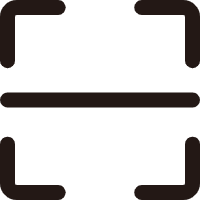
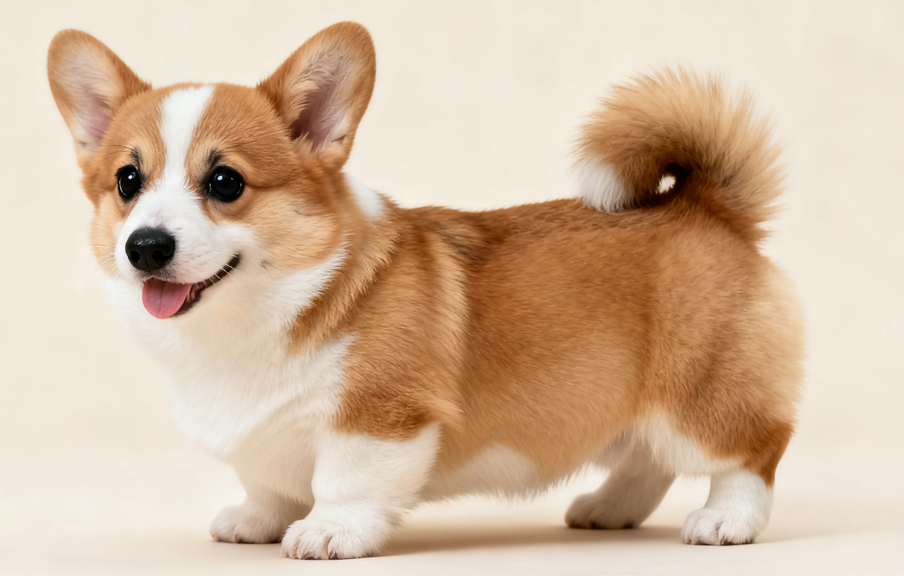
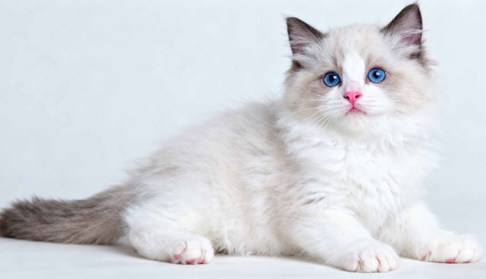
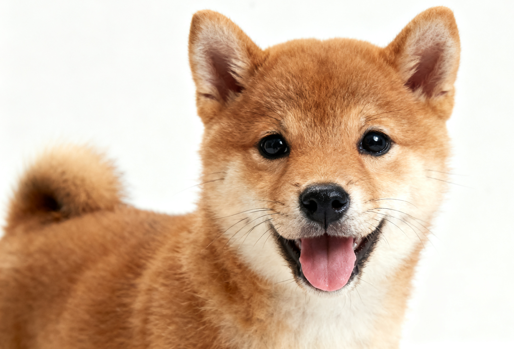
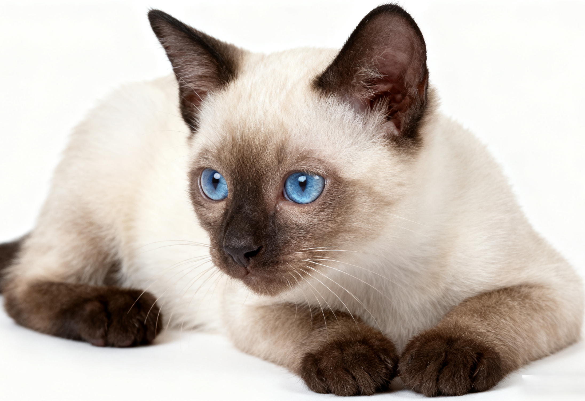
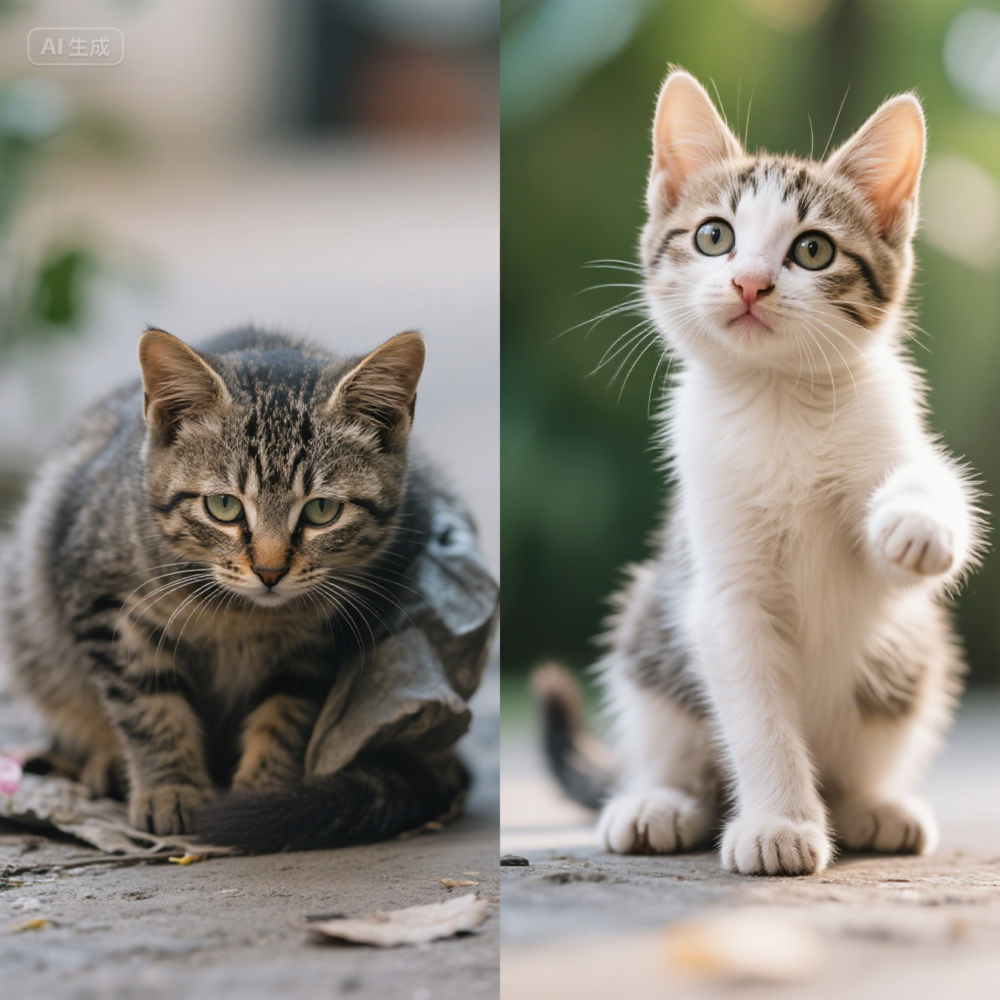
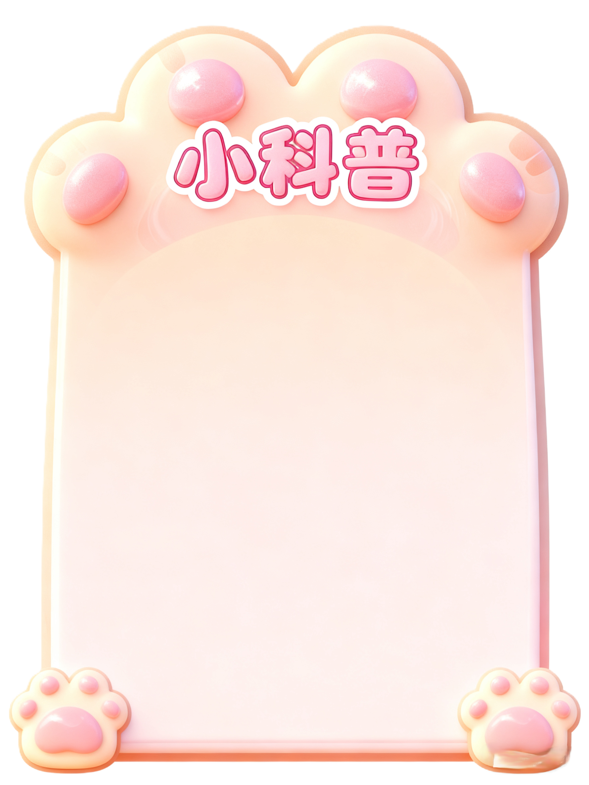

用户名xxx
个人救助记录
领养
捐赠
志愿服务
 AI识别

小花
一岁柯基，活泼可爱

小支
两个月波斯猫，性格温顺

小明
三个月柴犬，性格乖巧

黑子
一岁半暹罗猫，聪明懂事

“花妹” 是一只三花猫，约 1 岁时被发现，体重不足 6 斤。 芭比堂动物医院广州吉雅分院兽医师钟敏怡在与救助人沟通其绝育事宜时，感受到了救助人的极度上心，对方为了猫咪的绝育手术，和她反复讨论了一个下午。 体检显示 “花妹” 体况不佳，尾巴严重脱皮且后半截干瘪，但仍具备手术条件。 绝育手术完成后，医护团队还为它处理了尾巴伤势。在 “花妹” 住院的 12 天里，救助人对其饮食和身体指标等关怀备至。 最终 “花妹” 顺利康复并被领养，再次回到医院接种疫苗时，它已从瑟缩的流浪猫变成了会主动蹭人撒娇的活泼小猫。
成都市民何女士在金牛区赛云台附近写字楼上班途中，发现成彭高架桥的桥墩上有一只黑白相间的小猫，推测其已被困至少一周，便在社交平台发出求助。 朱女士看到消息后表示想领养这只小猫，随后两人联系上成都猫咪应急救援平台 “和猫住”。 由于桥墩约 10 米高，救援难度较大，“和猫住” 工作人员王胜斌戴上头盔，系上安全绳，升到桥墩顶端寻找小猫，经过多次尝试，最终利用诱捕笼成功将小猫救下。 小猫被朱女士领养，并取名为 “平安”。

固定投喂点：选择远离居民窗户、行人通道的隐蔽位置（如小区角落、绿化带边缘）
投喂时可观察动物健康状况，若发现受伤、生病个体，及时联系当地动物救助站
对成年动物：不追逐、不恐吓，若动物主动靠近，可缓慢后退；若发现动物有攻击性，立即远离
对幼年动物：若发现刚出生的流浪幼崽，不要直接抱走，可先在附近放置干净水和幼猫 / 幼犬粮，观察 1-2 小时；
若确认母兽遗弃，再联系救助站
投喂食物：优先选择宠物专用粮，严禁投喂洋葱、巧克力、含盐剩菜
每周投喂 2-3 次即可，避免动物产生 “依赖型流浪”
对受伤动物：不擅自处理伤口，可先用纸箱、旧衣物搭建临时庇护所
再拨打当地救助组织电话，由专业人员处理